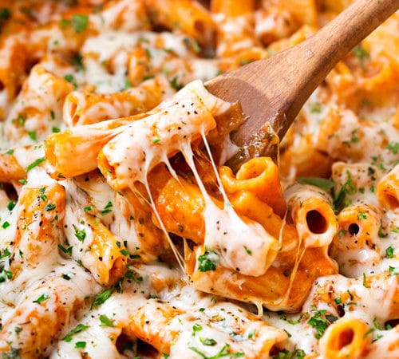

Chicken Parmesan Pasta

Description
Sink into a creamy, cheesy bowl of pure comfort: tender bite-sized pieces of seasoned chicken mingle
with aromatic onion and garlic, all simmered together with rigatoni in a rich marinara sauce—cooked straight
in one pot, no extra dishes. Then, the magic happens: layers of Parmesan and mozzarella melt into a velvety blanket,
coating every noodle in gooey perfection. Topped with a sprinkle of fresh parsley and basil, this 30-minute wonder delivers
maximum flavor with minimal cleanup—dinner never tasted so effortless.
Ingredients
- 2-3 Boneless Skinless Chicken Breasts, Diced Into Bite Sized Pieces
- 1 Tsp Italian Seasoning
- 1/2 Tsp Garlic Powder
- 1 Medium Yellow Onion, Minced
- 3 Cloves Garlic, Minced
- 16 Oz Dried Short-Cut Pasta
- 24 Oz Jar of your Favorite Marinara Sauce
- Water to Fill Empty Marinara Sauce Jar
- 1 Cup Mozzarella Cheese
- 1/2 Cup Parmesan Cheese
- Salt and Pepper
- Additional Dried Italian Seasoning (optional)
- Fresh Parsley and/or Basil, Minced for Garnish
Steps
-
To a large pot or skillet, add a drizzle of olive oil and heat over MED-HIGH heat.
Add chicken, season with salt, pepper, Italian seasoning and garlic powder. Cook about 5 minutes, until chicken
is most of the way cooked through. Remove to a plate.
-
Add onion and garlic to the pot and cook about 2-3 minutes, until soft. Pour in marinara sauce, fill up empty sauce
jar with water and add to the pot. Bring to a boil, then reduce to a strong simmer.
-
Add chicken and pasta, stir, then cover and cook for 10-15 minutes, until pasta is cooked to your liking. Stir in parmesan cheese
and 1/4 cup of the mozzarella cheese.
-
Sprinkle remaining 3/4 cup mozzarella cheese on top of the dish and cook another 2-3 minutes, until cheese is melted and gooey.
-
Sprinkle with additional Italian seasoning if desired, and garnish with parsley or basil.
Home